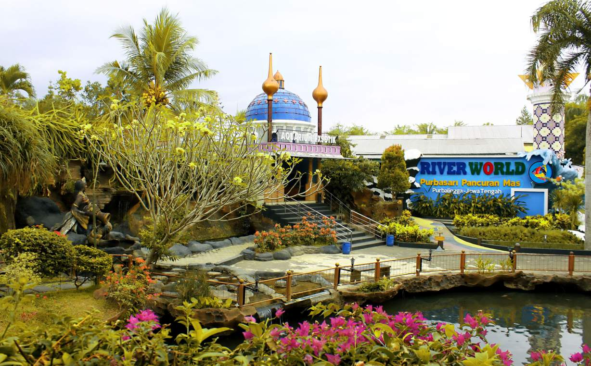

Welcome to Purbasari Pancuran Mas

Purbasari Pancuran Mas adalah tempat wisata pendidikan yang menawarkan berbagai keindahan alam dan kegiatan menarik. Yang bertempat di Purbalingga.
Purbasari Pancuran Mas adalah destinasi wisata alam yang menawarkan pengalaman rekreasi yang menyatu dengan keindahan alam. Terletak di tengah pemandangan hijau dan dikelilingi oleh pegunungan yang asri, tempat ini menyediakan berbagai fasilitas menarik seperti kolam renang alami dengan air segar dari mata air pegunungan, aquarium dengan macam-macam jenis hewan laut dan kebun binatang. Pengunjung dapat menikmati suasana tenang, udara sejuk, serta beragam aktivitas yang mendekatkan mereka pada alam. Wisata ini cocok untuk keluarga, pasangan, atau rombongan yang ingin melepas penat dan menikmati suasana alam yang menenangkan.